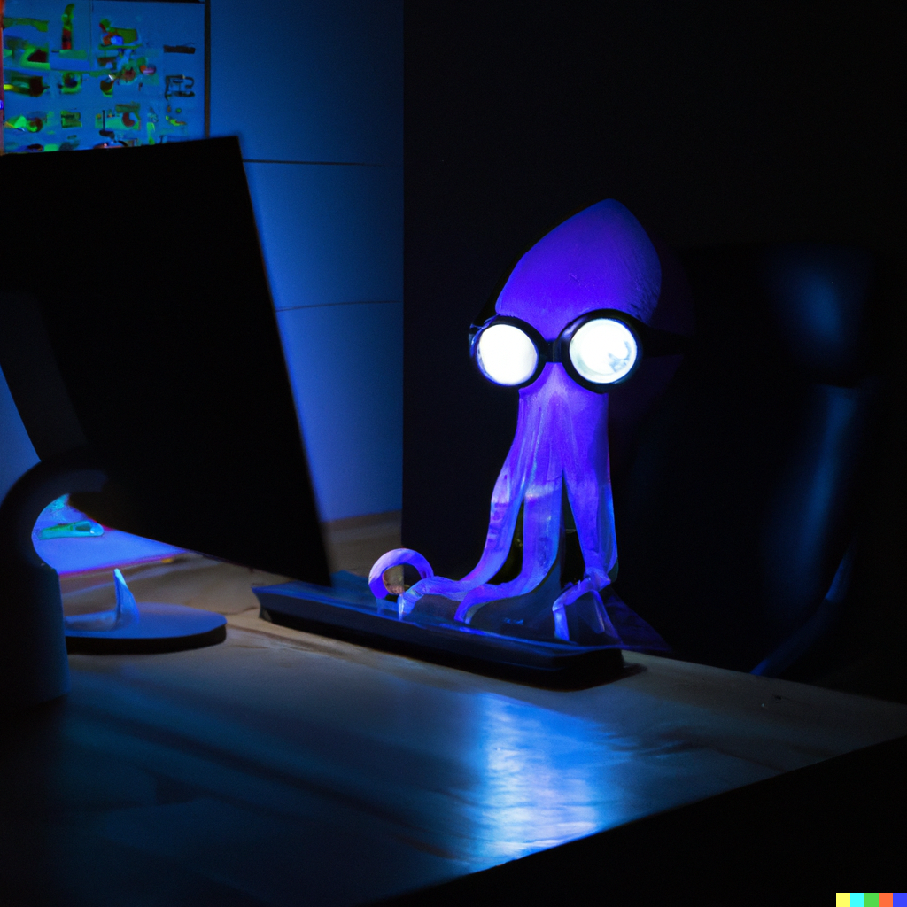

My name is Connor Schweighöfer, and I'm an 18-year-old developer and high school student based in Rinteln, Germany.
With 4 years of programming experience, I'm passionate about creating innovative and user-friendly applications.
Currently, I'm completing my high school education, with a focus on Math, Physics and Chemistry.
Although I couldn't select computer science as a subject, I'm eagerly looking forward to starting my studies in computer science in 2024.
I believe that university will provide me with the education and opportunities to reach my full potential as a developer.
Throughout my journey as a developer, I have been fortunate to work on a wide range of projects, allowing me to refine my skills in various technologies. Notably,
I had the opportunity to contribute to TJ-Bot, an open-source Discord bot developed using Java 17 and JDA, specifically designed for the Together Java Discord.
Outside of school, I enjoy staying up-to-date with the latest trends and technologies in the field of software development.
I am an active helper/community lead of the Together Java Discord
and I regularly attend industry events and conferences.
At the moment, I am deeply engaged in the development of two interconnected Minecraft plugins: FrameUI and AuctionHouseUI.
The FrameUI plugin serves as a powerful library that enables the creation of dynamic virtual screens within Minecraft.
Upon the completion of the FrameUI plugin, my focus will shift to the development of AuctionHouseUI, an exciting addition that brings an immersive auction house experience to the world of Minecraft.
AuctionHouseUI leverages the capabilities of the FrameUI plugin to create visually captivating and interactive auction interfaces within the game.
Additionally, in my current focus, I am dedicated to expanding my knowledge and skills in backend development.
To achieve this, I have embarked on a comprehensive exploration of the Spring ecosystem, primarily through the book "Spring in Action."
This learning journey aims to deepen my understanding of the Spring API and its extensive features, equipping me with the ability to develop
robust and scalable backend solutions.

Connor Schweighöfer | SquidXTV
Software Developer | [Age] years old | 🇩🇪
About Me
Skills
-
Java
Expert
-
Python
Proficient
-
HTML
Proficient
-
CSS
Proficient